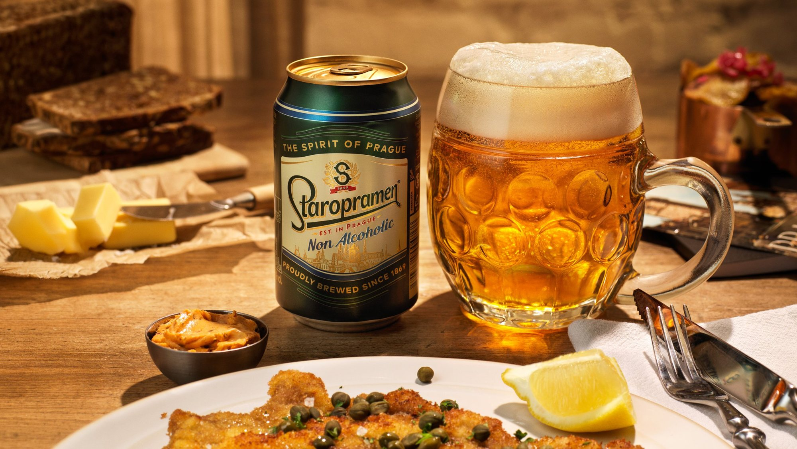
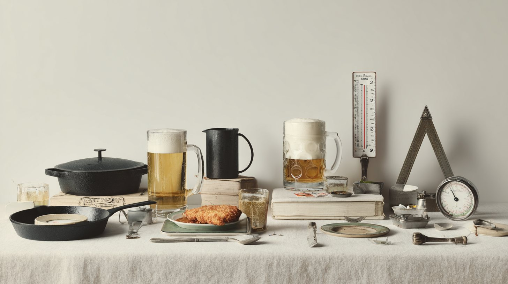
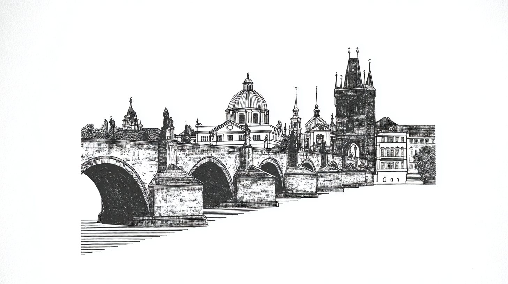
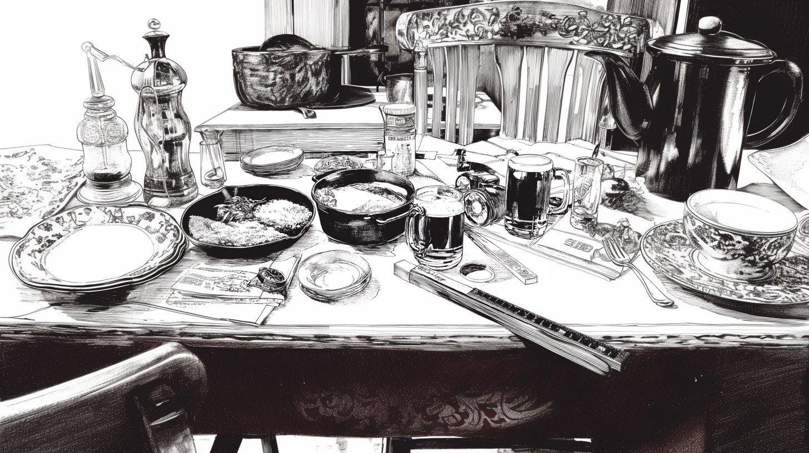
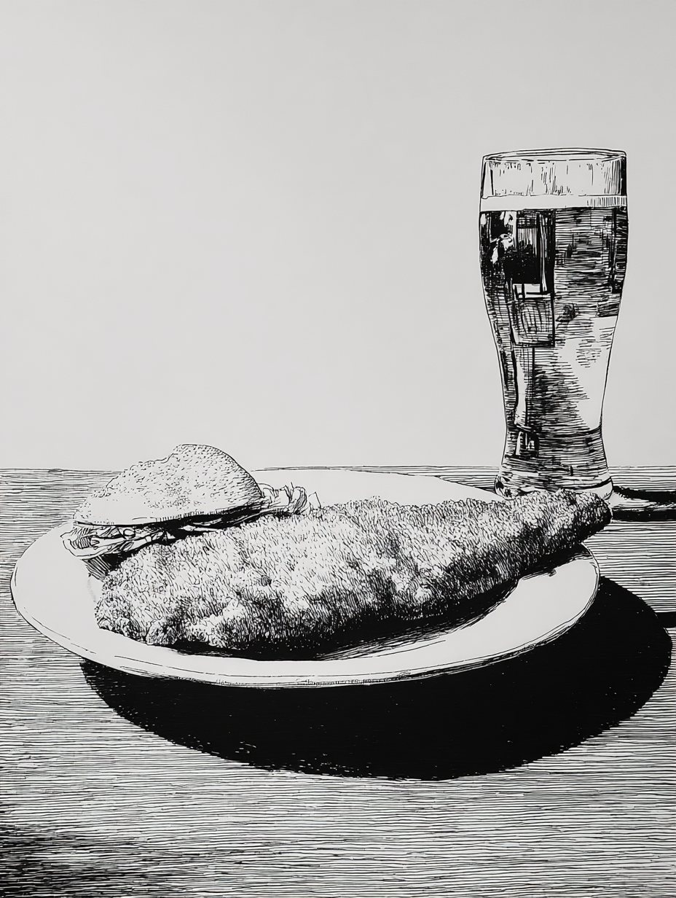
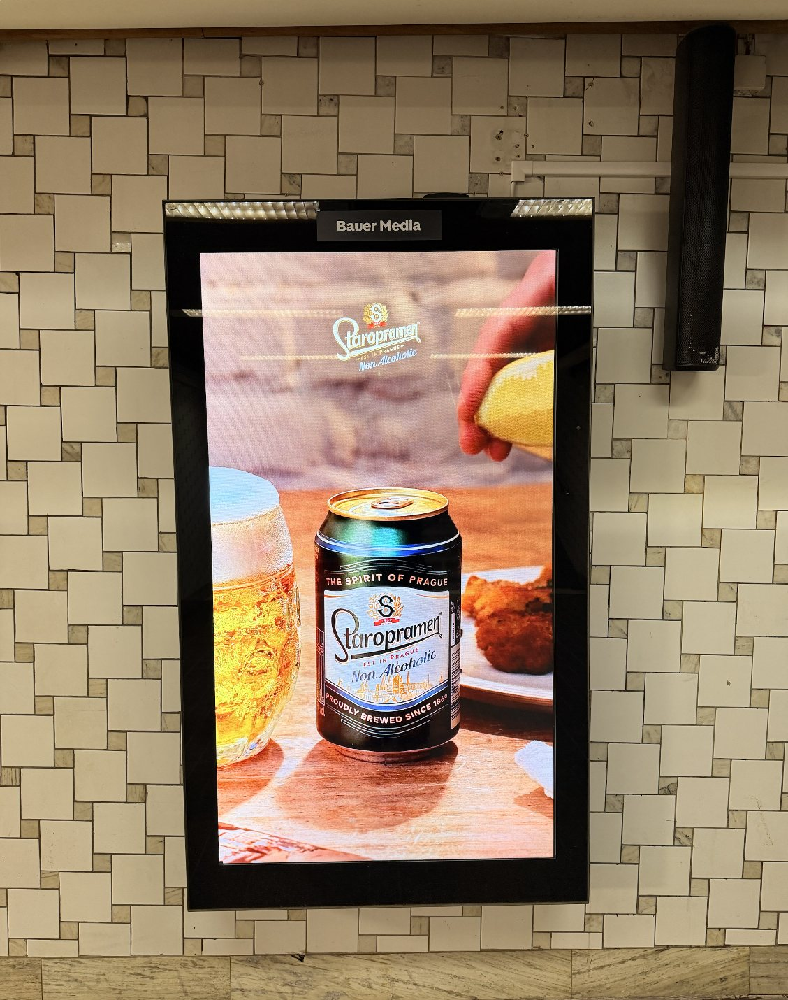

STAROPRAMEN

My role
- RoleDesign intern
- TeamMe, the studio manager and a graphic designer
- What I didBrainstorming, concept images with my colleague in Gemini and Photoshop, planning the photo and video set-up, the client pitch, and input at the shoot
- ToolsGeminiPhotoshop
The brief
Staropramen wanted a campaign built on its Czech roots. We explored three ideas: the Olympics, Prague’s hidden gems, and Czech food culture through schnitzel.
Visualising with AI
I created the scenes in Gemini and finished them in Photoshop. That way the client could see the campaign before anything was shot.


Concept images
With my colleague I created compositions for photo and video in Gemini, looking for one simple image that says Staropramen. Then we pitched them to the client.



The shoot
The client chose the schnitzel idea. At the shoot I gave input on how to set up the photos and video, based on our concept images.


The campaign live
The campaign ran on TV, social media and digital screens.

What I learned
It was my first campaign from brainstorm to live ad. Showing ideas as finished-looking pictures made it easier for the client to choose.